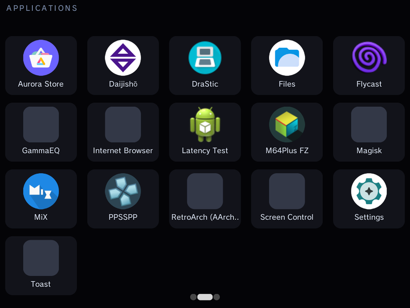

On the Anbernic RG DS and RG DS Plus, a game or app that uses one screen runs on the top panel. Instead of leaving the bottom panel dark, GammaOS Nano turns it into the Control Center: a touch dashboard with brightness and volume sliders, one-tap tiles, live temperature and performance gauges, and a launcher for a second app.

When it appears
The Control Center shows up on its own. Start any single-screen game or app from the home (RetroArch, a standalone emulator, an Android app) and the bottom screen switches to the Control Center. Quit the game and it goes away as the home comes back.
It does not appear when the app itself uses both screens: DS games in DraStic Nano, dual-screen apps and apps set to Run on Primary Screen (see Applications) keep the bottom panel for themselves.
Everything on it works by touch. Your buttons and sticks stay with the game on the top screen, so using the Control Center never interrupts your input.
Moving between pages
There are three pages, marked by the dots along the bottom edge:
- Control Center: the dashboard.
- Applications: an app launcher for the bottom screen.
- Screen Options: the bottom screen's sleep settings.
Swipe left on the bottom screen to go to the next page and swipe right to go back. The Control Center always comes back on the dashboard page.
Page 1: the dashboard
The header shows CONTROL CENTER, then the battery state (BAT on battery, CHG while charging), the charge percentage, the power draw in watts, and the time.
Brightness
Two vertical sliders, TOP and BTM, set the brightness of each screen. Touch a slider and drag up or down. The change sticks: it is kept when you return to the home and survives a sleep and wake.
Controls tiles
| Tile | What it does |
|---|---|
| Sleep Screen | Fades the bottom screen to black to save power and stop it distracting you. Tap the dark bottom screen to wake it (or double-tap, see Screen Options). |
| Performance | Cycles the performance mode: Stock, Powersave, Max. The tile shows the current mode. |
| Split Bright | Lets the two screens keep separate brightness levels instead of following one shared brightness. |
| Shader | Turns the system display shader on or off (the same shader as the Quick Menu's Global Shaders). |
| Gamma EQ | Turns the GammaEQ speaker enhancements on or off. |
| Mouse | Turns GammaPad's virtual mouse on or off, with the pointer on the top screen (see below). |
| Screenshot | Saves a screenshot of the game on the top screen (not of the Control Center) to Pictures/Screenshots. While an app runs on the bottom screen this tile becomes Close App. |
| Wi-Fi | Turns Wi-Fi on or off. |
A tile that is switched on is highlighted.
Volume
ALL sets the overall volume. TOP and BTM set the volume of each screen separately; they only respond when Multi-Volume is turned on in the GammaOS Toolbox.
Thermal and Performance
- THERMAL shows the SoC and GPU temperatures.
- PERFORMANCE has four ring gauges: CPU clock (GHz), GPU clock (MHz), PWR (power draw in watts) and RAM in use (GB). The CPU and GPU rings fill against the chip's top clock, so a full ring means the chip is running flat out.
The Mouse tile
Some Android apps and games expect a mouse or a touch screen on the screen they run on. The Mouse tile switches on GammaPad's virtual mouse: the left stick or d-pad moves a pointer on the top screen, A clicks, Y right-clicks, B goes back, holding X speeds the pointer up and the right stick scrolls, so you can drive a touch-only app without reaching for the top panel. It is the same mouse mode you get by holding Select + R1; see Mouse & Keyboard and Gamepad & Remapping for its speed settings.
- Switching mouse mode on or off no longer relaunches or crashes the running app.
- If the app quits or crashes while mouse mode is on, mouse mode is switched off as soon as the home is back, so the d-pad and sticks work normally again.
Page 2: Applications

Tap an app to run it on the bottom screen, next to the game on top. Handy for a guide, a walkthrough in the browser, a music player or a chat app while you play.
- While a bottom-screen app is running, the Control Center steps aside so the app has the whole panel. When you close the app, the Control Center comes back.
- Starting another app from this page closes the previous bottom-screen app first.
- If you pick an app that uses both screens, it replaces what is running and takes over both panels.
Page 3: Screen Options

Tap a row to change it:
| Row | Options | What it does |
|---|---|---|
| Double Tap to Wake | Off / On | When on, a sleeping bottom screen needs two quick taps to wake, so an accidental brush of the panel while you hold the device does not light it up. Default Off. |
| Screen Timeout | Never, 15s, 30s, 1 min, 2 min, 5 min | The bottom screen fades to sleep by itself after this long without a touch. Default 30s. |
The same two settings are in Settings > GammaOS Toolbox as Control Centre Double Tap and Control Centre Timeout, where the timeout also offers 10 minutes. See GammaOS Toolbox.
Related pages
- Applications for Run on Primary Screen and dual-screen apps.
- Quick Menu for the overlay you raise over a game with Power.
- GammaOS Toolbox for Multi-Volume and the Control Centre rows.